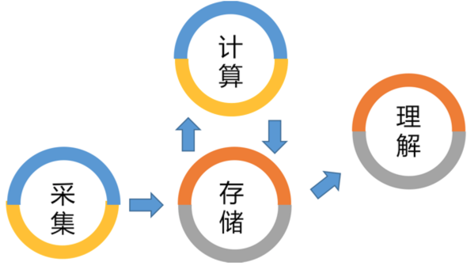
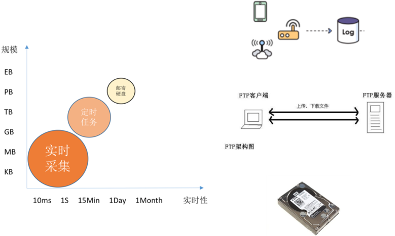
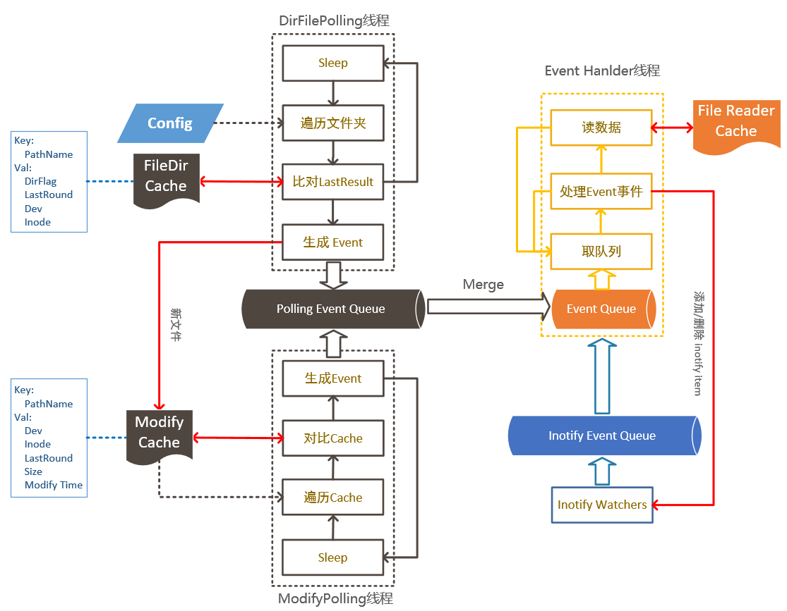
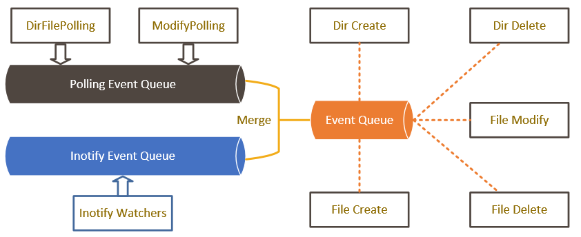
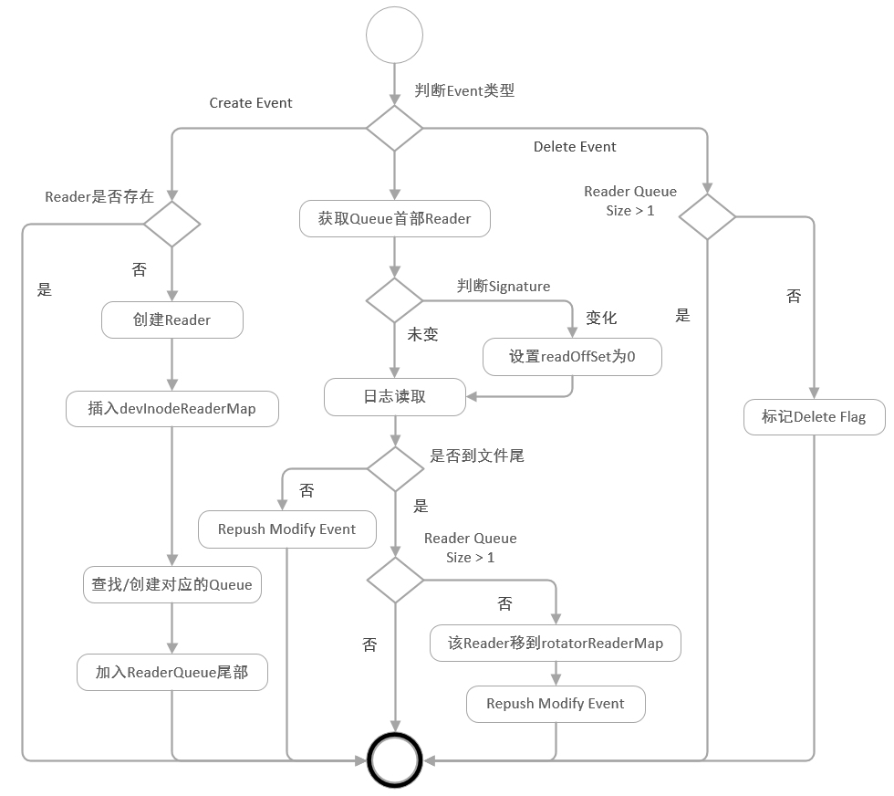
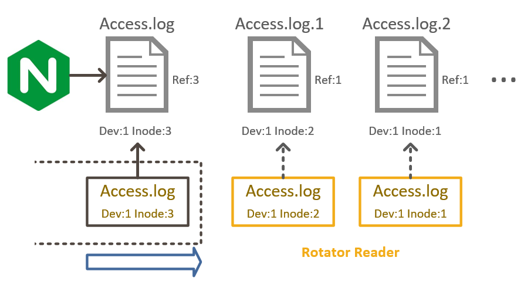
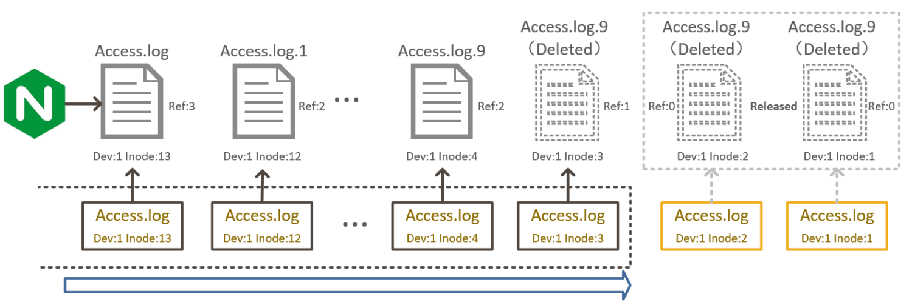

logtail是阿里云一款进行日志实时采集的Agent，当前几十万台部署logtail的设备运行在各种不同环境上（集团、蚂蚁、阿里云，还有用户部署在公网、IOT设备），每天采集数PB的数据，支撑上千种应用的日志采集。
日志数据采集
提到数据分析，大部分人首先想到的都是Hadoop，流计算，API等数据加工的方式。如果从整个过程来看，数据分析其实包含了4个过程：采集，存储，计算和理解四个步骤。
- 采集：从各种产生数据的源头，将数据集中到存储系统。包括硬盘上的历史数据，用户网页的点击，传感器等等
- 存储：以各种适合计算的模式集中式存储数据，其中既包含大规模的存储系统（例如数仓），也有例如临时的存储（例如Kafka类消息中间件）
- 计算：形态多种多样，但大部分计算完成后会将结果再放入存储
- 理解：利用机器学习、可视化、通知等手段将结果呈现出来

数据采集是一门很大的范畴，从实时性上和规模上分，一般可以分为3类：
- 实时采集：例如日志，database change log等
- 定时任务：例如每隔5分钟从FTP或数据源去批量导出数据
- 线下导数据：例如邮寄硬盘，AWS Snowmobile 卡车等
从数据的价值以及体量上而言，实时数据采集毫无疑问最重要的，而其中最大的部分就是日志实时采集。

日志采集Agent做了哪些工作？
日志采集Agent看起来很简单：安装在操作系统中，将实时产生的日志（文本）数据采集到类似消息中间件（类似Kafka）服务中。很多人可能觉得这是一个tail 命令就能干的，哪有这么复杂？
如果我们把其中细节展开就会发现一大堆工作，除了需要解决分布式日志汇聚的问题，还需要处理各种日志格式、不同采集目录、不同运行环境、多租户资源隔离、资源限制、配置管理、系统监控、容错、升级等等问题，而日志采集Agent就是为了解决这些问题应运而生的产物。
试想如果不用Agent，就拿最简单的收集nginx访问日志来讲，需要写一个脚本定期检测access.log有无更新，把更新的日志发送到服务端，除此之外还需要将原始访问日志解析成key/value字段、处理日志轮转、处理本地/服务端网络异常、处理访问流量burst时的削峰填谷、处理脚本异常等等，当一个接一个的问题解决完之后，回过头原来你又造了一遍轮子。
阿里云日志服务 的logtail就是一款进行日志实时采集的Agent，当前几十万台部署logtail的设备运行在各种不同环境上（集团、蚂蚁、阿里云，还有用户部署在公网、IOT设备），每天采集数PB的数据，支撑上千种应用的日志采集。从刚开始几个应用、几千台、每天几T数据的规模发展到今天，我们踩过很多坑，也从中学到很多，积累了很多宝贵的经验。
本期主要和大家一起分享logtail设计中对于轮询和事件模式共存情况下如何解决日志采集保序、高效、可靠的问题。
为什么要轮询+事件
什么是轮询什么是事件
对于日志采集，大家很容易想到通过定期检测日志文件有无更新来进行日志采集，这种我们一般称之为轮询(polling)的方式。轮询是一种主动探测的收集方式，相对也存在被动监听的方式，我们一般称之为事件模式。事件模式依赖于操作系统的事件通知，在linux下2.6.13内核版本引入inotify， 而windows在xp中引入FindFirstChangeNotification，两者都支持以被动监听的方式获取日志文件的修改事件。
轮询vs事件
下面来看看轮询和事件之间的区别，对比如下：
| 轮询 | 事件 | |
|---|---|---|
| 实现复杂度 | 低 | 高 |
| 跨平台 | 不依赖操作系统 | 不同操作系统单独实现 |
| 采集延迟 | 高 | 低 |
| 资源消耗 | 高 | 低 |
| 系统限制 | 基本无限制 | 依赖内核/驱动 |
| 资源限制 | 基本无限制 | 依赖系统 |
| 大规模场景 | 支持较差 | 支持 |
轮询相对事件的实现复杂度要低很多、原始支持跨平台而且对于系统限制性不高；但轮询的采集延迟（默认加上轮询间隔一半的采集延迟）以及资源消耗较高，而且在文件规模较大（十万级/百万级）时轮询一次的时间较长，采集延迟非常高。
传统Agent怎么做
一般Agent（例如logstash、fluentd、filebeats、nxlog等）都采用基于轮询的方式，相对事件实现较为简单，而且对于大部分轻量级场景基本适用。但这种方式就会暴露以上对比中出现的采集延迟、资源消耗以及大规模环境支持的问题，部分对于这些条件要求较高的应用只能望而却步。
logtail的方案是什么
为了同时兼顾采集效率以及支持各类特殊采集场景，logtail使用了轮询与事件并存的混合方式（目前只支持linux，windows下方案正在集成中）。一方面借力inotify的低延迟与低性能消耗，另一方面使用轮询兼容不支持事件的运行环境。然而混合方案相比纯粹轮询/事件的方案都要复杂，这里主要存在3个问题：
- 如何解决高效采集的问题
- 如何解决日志顺序保证问题
- 如何保证可靠性问题
下面围绕这些问题对我们的方案进行展开
logtail轮询+inotify事件实现方式
轮询+inotify事件混合方案简介

logtail内部以事件的方式触发日志读取行为，轮询和inotify作为较为独立的两个模块，对于同一文件/模块会分别产生独立的Create/Modify/Delete事件，事件分别存储于Polling Event Queue和Inotify Event Queue中。
轮询模块由DirFilePolling和ModifyPolling两个线程组成，DirFilePolling负责根据用户配置定期遍历文件夹，将符合日志采集配置的文件加入到modify cache中；ModifyPolling负责定期扫描modify cache中文件状态，对比上一次状态（Dev、Inode、Modify Time、Size），若发现更新则生成modify event。
Inotify属于事件监听方式，因此不存在独立线程，该模块根据用户配置监听对应的目录以及子目录，当监听目录存在变化，内核会将事件push到相应的file descriptor中。

最终由Event Handler线程负责将两个事件队列合并(merge)到内部的Event Queue中，并处理相应的Create/Modify/Delete事件，进行实际的日志读取。
高效性如何保证
相信读者在看到混合两个字时一定想到一个非常明显的问题：logtail采用了两种方案，那是不是开销就是2倍啊？答案当然不是，logtail在混合方案中采取了以下几个措施来保证两种方案混合的情况下如何采两家之长并尽可能去两家之短：
- 事件合并(merge)：为减少轮询产生的事件和inotify产生的事件多次触发事件处理行为，logtail在事件处理之前将重复的轮询/inotify事件进行合并，减少无效的事件处理行为；
- 轮询自动降级：如果在系统支持且资源足够的场景下，inotify无论从延迟和性能消耗都要优于轮询，因此当某个目录inotify可以正常工作时，则该目录的轮询进行自动降级，轮询间隔大幅降低到对CPU基本无影响的程度；
- 轮询与inotify cache共享：日志采集中的很大一部分开销来源于日志文件匹配，在集团内外经常会出现一台机器上logtail配置了上百种不同的配置的情况，对于一个文件需要对上百个配置进行逐一判断是否匹配。logtail内部对于匹配结果维护了一个cache，而且cache对于轮询和inotify共享，尽可能减少这部分较大的开销。
日志收集顺序保证
日志收集顺序难点分析
日志顺序性保证是日志采集需要提供的基本功能，也是较难实现的一种功能，尤其在以下几种场景并存的情况下：
- 日志轮转(rotate)：日志轮转是指当日志满足一定条件（日志跨天、超过一定条数、超过一定大小）进行重命名/压缩/删除后重新创建并写入的情况，例如Ngnix访问日志可设置以20M位单位进行轮转，当日志超过20M时，将access.log重命名为access.log.1，之前的access.log.1重命名为access.log.2，以此类推。agent需要保证日志轮转时收集顺序与日志产生顺序相同；
- 不同配置方式：优秀的日志采集agent并不应该强制限制用户的配置方式，尤其在指定日志采集文件名时，有的用户习惯配置成
*.log，有的用户习惯配置成*.log*，而无论哪种配置agent都应该能够兼容，不会出现*.log在日志轮转情况下少收集或*.log*在日志轮转情况下多收集的情况； - 轮询与inotify并存问题：若系统不支持inotify，则只有轮询产生的事件，而若inotify正常工作，那么同一文件的修改会产生两次事件，而且由于inotify延迟较低，所以事件很可能会先于轮询的事件被处理。我们需要保证延迟到来的事件不会影响日志exactly once的读取；
基于轮转队列与文件签名的日志采集方法
基本概念
在logtail中，我们设计了一套用于在日志轮转、不同用户配置、轮询与inotify并存、日志解析阻塞情况下依然可以保证日志采集顺序的机制。本文将重点该机制的实现方法，在展开之前首先介绍logtail中用到的几个基本概念：
文件的dev和inode标识
inode引用计数
- 每个文件都对应着一个inode，inode指向文件的meta信息，其中有一个字段是reference count，默认文件创建时引用计数为1，引用计数为0时文件被文件系统回收。以下情况会改变文件的引用计数：若文件open，则引用计数加1，文件close后减1；硬连接创建引用计数加1；文件/硬链接删除，引用计数减1。因此，虽然文件被删除，但只要有应用保持该文件的open状态，则该文件并不会被文件系统回收，应用还可以对该文件进行读取。
文件签名(signature)
- dev+inode只能保证同一时刻该文件的唯一性，但并不代表整个life cycle中的唯一性。在文件从文件系统中删除时，对应的inode也会被回收，内核file system实现中存在分配唯一inode的机制，为了提高inode分配性能，回收的inode会保留在文件系统的cache中，下一次创建文件时，若存在inode cache则直接将该inode赋给新文件。因此纯粹通过dev+inode判断轮转并不可行（例如日志文件到达一定size被删除后，重新创建继续写，只要期间没有其他文件创建，则dev+inode都没变），logtail中使用日志文件的前1024字节的hash作为该文件的签名(signature)，只有当dev+inode+signature一致的情况下才会认为该文件是轮转的文件。
在logtail的设计中利用了以上几个概念的功能，下面介绍一下日志收集顺序保证的几个数据结构：
LogFileReader
- LogFileReader存储了日志文件读取的元数据，包括sorcePath、signature、devInode、deleteFlag、filePtr、readOffset、lastUpdateTime、readerQueue(LogFileReaderQueue)。其中sorcePath是reader文件路径，，signature是文件的签名，devInode是改文件的dev+inode组合，deleteFlag用于标识该文件是否被删除，filePtr是文件指针，readOffset代表当前日志解析进度，lastUpdateTime记录最后一次进行读取的时间，readerQueue标识该reader所在的读取队列（参见下面介绍）。
LogFileReaderQueue
- LogFileReaderQueue中存储sourcePath相同且未采集完毕的reader列表，reader按照日志文件创建顺序进行排列。
NamedLogFileReaderQueueMap
- 以sourcePath为key/LogFileReaderQueue为value的map，用于存储当前正在读取的所有ReaderQueue
DevInodeLogFileReaderMap
- 以devInode为key/LogFileReader为value的map，用于存储当前正在读取的所有Reader
RotatorLogFileReaderMap
- 以devInode为key/LogFileReader为value的map，用于存储处于轮转状态且已经读取完毕的Reader
事件处理流程
logtail基于以上的数据结构实现了日志数据顺序读取，具体处理流程如下：

CreateEvent处理方式
- 对于日志的Create Event，首先从当前的devInodeReaderMap中查找是否存在该dev+inode的Reader（因为在轮询和Inotify共存的情况下，可能会出现在处理Create Event时Reader已经被创建的情况），若不存在则创建Reader。
- Reader通过dev+inode和sourcePath创建，创建Reader后需加入到devInodeReaderMap以及其sourcePath对应的ReaderQueue尾部
DeleteEvent处理方式
- 对于日志文件的Delete Event，若该Reader所在队列长度大于1（当前解析进度落后，文件虽被删除但日志未采集完成），则忽略此Delete事件；若Reader所在队列长度为1，设置该Reader的deleteFlag，若一定时间内该Reader没有处理过Modify事件且日志解析完毕则删除该Reader
ModifyEvent处理方式
- 首先根据dev+inode查找devInodeReaderMap，找到该Reader所在的ReaderQueue，获取ReaderQueue的队列首部的Reader进行日志读取操作；
- 日志读取时首先检查signature是否改变，若改变则认为日志被truncate写，从文件头开始读取；若signature未改变，则从readOffset处开始读取并更新readOffset
- 若该日志文件读取完毕(readOffsetfileSize)且ReaderQueue的size > 1，则从ReaderQueue中移除该Reader并加入到rotatorReadrMap中（日志已经发生了轮转，且轮转后的文件已经读取完毕，所以可以从ReaderQueue中移除），此时继续把Modify Event push到Event队列中，触发队列后续文件的读取，进入下一循环；若日志文件读取完毕且ReaderQueue的size1（size为1说明该文件并没有轮转，极有可能后续还有写入，所以不能从ReaderQueue中移除），则完成次轮Modify Event处理，进入下一循环
- 若日志文件没有读取完成，则把Modify Event push到Event队列中，进入下一循环（避免所有时间都被同一文件占用，保证日志文件读取公平性）
RotatorLogFileReaderMap主要用于解决轮询事件延迟问题：当inotify事件处理完成、日志读取完毕、ReaderQueue size > 1同时发生，若直接删除该Reader，则轮询的事件到达时，将会查找不到Reader并创建一个新的Reader重新进行日志读取。因此我们在Reader读取完毕时将其放入到RotatorLogFileReaderMap保存，若事件查找不到Reader时会检测RotatorLogFileReaderMap，若存在则跳过此次事件处理，避免多重事件造成日志重复采集的情况。
日志采集可靠性保证
考虑到性能、资源、性价比等问题，logtail在设计之初并不保证exact once或者at least once，但这并不代表logtail不可靠，有很多用户基于logtail采集的access日志用来计费。下面主要介绍可靠性中较难解决的三个场景：
- 日志解析阻塞：由于各种原因（网络阻塞、日志burst写入、流量控制、CPU/磁盘负载）等问题可能造成日志解析进度落后于日志产生速度，而在此时若发生日志轮转，logtail需在有限资源占用情况下尽可能保证轮转后的日志文件不丢失
- 采集配置更新/进程升级：配置更新或进行升级时需要中断采集并重新初始化采集上下文，logtail需要保证在配置更新/进程升级时即使日志发生轮转也不会丢失日志
- 进程crash、宕机等异常情况：在进程crash或宕机时，logtail需尽可能保证日志重复采集数尽可能的少丢失日志
日志采集阻塞处理

正常情况下，日志采集进度和日志产生进度一致，此时ReaderQueue中只有一个Reader处于采集状态。如上图所示，正在被采集的access.log由于磁盘上存在、应用和logtail正在打开，所以引用计数为3，其他轮转的日志文件引用计数为1。
而当应用日志burst写入、网络暂时性阻塞、服务端Quota不足、CPU/磁盘负载较高等情况发生，日志采集进度可能落后于日志产生进度，此时我们希望logtail能够在一定的资源限制下尽可能保留住这些日志，等待网络恢复或系统负载下降时将这些日志采集到服务器，并且保证日志采集顺序不会因为采集阻塞而混乱。

如上图所示，logtail内部通过保持轮转日志file descriptor的打开状态来防止日志采集阻塞时未采集完成的日志文件被file system回收（在ReaderQueue中的file descriptor一直保持打开状态，保证文件引用计数至少为1）。通过ReaderQueue的顺序读取保证日志采集顺序与日志产生顺序一致。
- 当ReaderQueue的size大于1时说明日志解析出现阻塞，此时logtail会将该ReaderQueue中所有Reader的file descriptor保持打开状态，这样即使在日志文件轮转后被删除或被压缩（本质还是被删除）时logtail依然能够采集到该日志。
- 当日志轮转时（dev+inode变化，文件名未变），logtail会根据新的dev+inode创建Reader，并加入其文件名对应的ReaderQueue尾部，ReaderQueue保持顺序读取，以此保证日志文件解析顺序。
若日志采集进度一直低于日志产生进度，则很有可能出现ReaderQueue会无限增长的情况，因此logtail内部对于ReaderQueue设置了上限，当size超过上限时禁止后续Reader的创建
配置更新/升级过程处理
logtail配置采用中心化的管理方式，用户只需在管理页面配置，保存后会自动将配置更新到远程的logtail节点。此外logtail具备自动升级的功能，当推出新版本时，logtail会自动从服务器下载最新版本并升级到该版本。
- 为保证配置更新/升级过程中日志数据不丢失，在logtail升级过程中，会将当前所有Reader的状态保存到内存/本地的checkpoint文件中；当新配置应用/新版本启动后，会加载上一次保存的checkpoint，并通过checkpoint恢复Reader的状态。
- 然而在老版本checkpoint保存完毕到新版本Reader创建完成的时间段内，很有可能出现日志轮转的情况，因此新版本在加载checkpoint时，会检查对应checkpoint的文件名、dev+inode有无变化
- 若文件名与dev+inode未变且signature未变，则直接根据该checkpoint创建Reader
- 若文件名与dev+inode变化则从当前目录查找对应的dev+inode，若查找到则对比signature是否变化；若signature未变则认为是文件轮转，根据新文件名创建Reader；若signature变化则认为是该文件被删除后重新创建，忽略该checkpoint。
进程crash、宕机等异常情况处理
- 进程异常crash：logtail运行时会产生两个进程，分别是守护进程和工作进程，当工作进程异常crash时（概率极低）守护进程会立即重新拉起工作进程
- 进程重新启动时状态恢复：logtail除配置更新/进程升级会保存checkpoint外，还会定期将采集进度dump到本地，进程重新启动的过程与版本升级的过程相似：除了恢复正常日志文件状态外，还会查找轮转后的日志，尽可能降低日志丢失风险
参考文档
1 | - https://help.aliyun.com/document_detail/48869.html |

...
...
Copyright 2021 sunfy.top ALL Rights Reserved